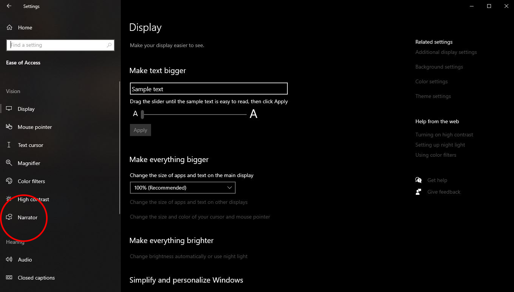

Windows Narrator
Click the video to play or scroll down for step by step instructions.
Step 1 : Press the Windows key
Step 2 : Press the settings button
Step 3 : Press the settings menu
Step 4 : Press the narrator panel on the side

Step 5 : Press the on / off switch to turn narrator on.
Step 6 : Press the OK button and Narrator is now activated.
Note : Double click a word, and use control + arrow key to have narrator read for you.
Enlarge Text
Click the video to play or scroll down for step by step instructions.
Step 1 : Press the Windows key
Step 2 : Press the settings button
Step 3 : Press the settings menu
Step 4 : Press the display panel on the side

Step 5 : Use the slider to increase the size of text.
Step 6 : Press apply.